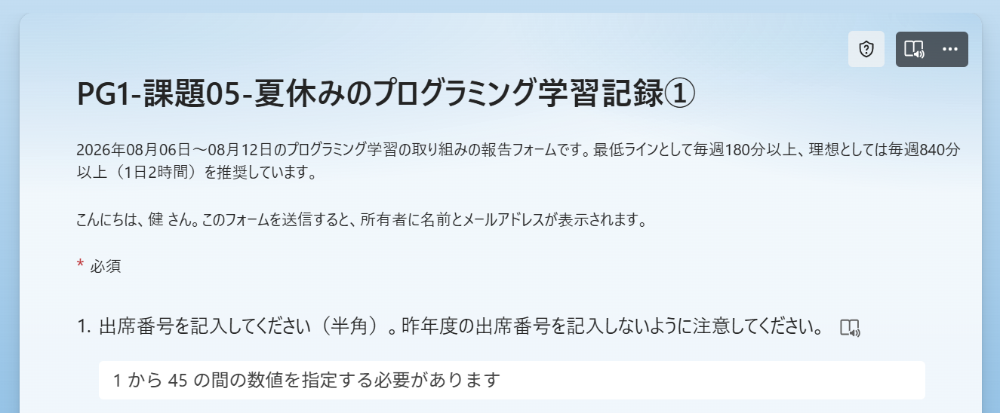
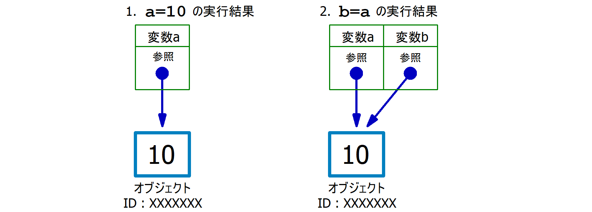
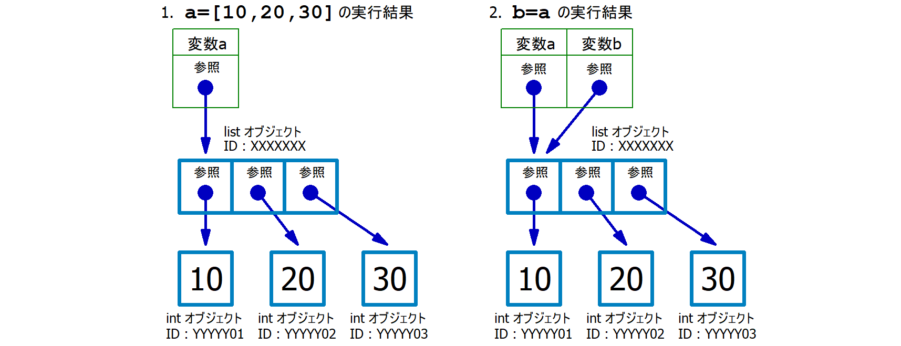
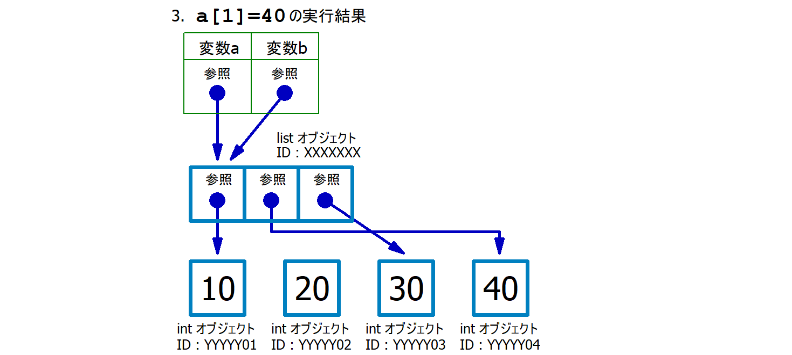
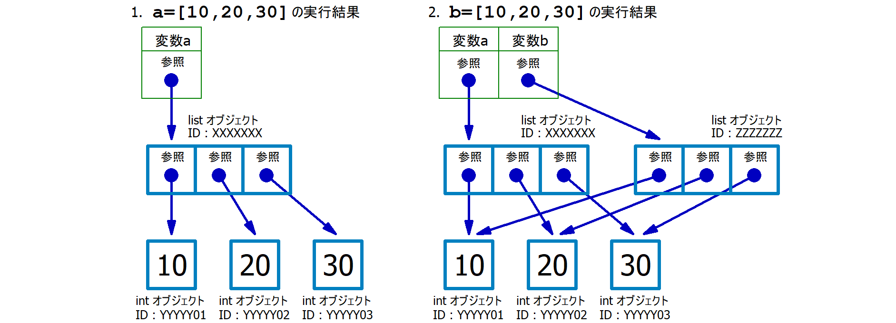
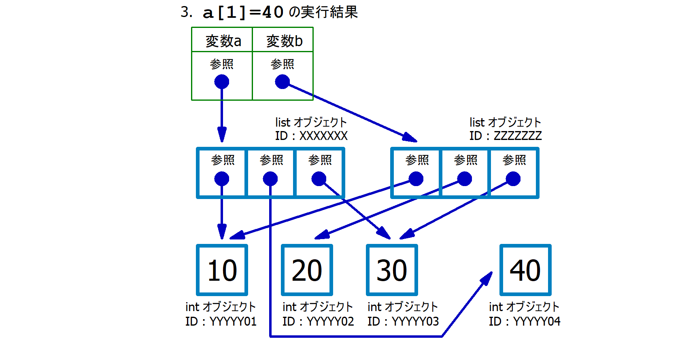

1 準備・案内
- Google Colab
にログイン、もしくは、ローカル環境の Jupyter
を起動し、
PG1-第13回講義.ipynbという名前でノートブックを作成しておいてください。- 今回の演習の実装例（解答例）は こちら を参照してください。
1.1 次回 (夏休み明け)、小テストを実施します。
- 今回の講義資料の範囲からの出題です。特にリストの浅いコピーと深いコピーについて理解しておいてください。
- 「参照」の概念を理解しておいてください。
- 多次元リストを
=で代入した場合、リストのcopy()メソッドで浅いコピーをした場合、copy.deepcopy()関数で深いコピーをした場合の挙動の違いを理解し、id()関数や要素の変更による影響を通して確認できるようになっておいてください。 - Teams に昨年度の小テスト例を配置しています。対策の参考にしてください。
2 課題05
- 今回の講義が「夏休み前の最終授業」となります。そして、次回の授業が
9月14日 (月) なので、1カ月強のブランク (空白期間)
が生じることになります。
- 語学やスポーツと同様に、プログラミング初心者が「1カ月以上のブランク」をつくると、学んだ内容や感覚の多くを忘れてしまいます。それは皆さんも教員も望まないはずです。そのため、夏休み中も、言語や内容・方法・スタイルは問わないので、最低でも3時間/週
は何かしらプログラミングに取り組んでください。
- 理想としては毎週840分以上 (1日2時間) を推奨します。
- クラブ活動や総合課題学習 (高専祭) に関連するプログラミングの取り組みでも全然OKです。
- …とはいえ、人間、何らかの強制力がないと「やらずじまい」になってしまいます。わずかでも、強制力を働かせるために、課題05 として、週単位で「プログラミングの学びの報告」をしてもらい、それを課題点として成績反映させる方法をとります。
- 語学やスポーツと同様に、プログラミング初心者が「1カ月以上のブランク」をつくると、学んだ内容や感覚の多くを忘れてしまいます。それは皆さんも教員も望まないはずです。そのため、夏休み中も、言語や内容・方法・スタイルは問わないので、最低でも3時間/週
は何かしらプログラミングに取り組んでください。
- 08/06(木) ～ 08/12(水) の取組み \(\to\) 課題05-学習記録① 入力期間 08/13 ～ 08/19
- 08/13(木) ～ 08/19(水) の取組み \(\to\) 課題05-学習記録② 入力期間 08/20 ～ 08/26
- 08/20(木) ～ 08/26(水) の取組み \(\to\) 課題05-学習記録③ 入力期間 08/27 ～ 09/02
- 08/27(木) ～ 09/02(水) の取組み \(\to\) 課題05-学習記録④ 入力期間 09/03 ～ 09/09
- 09/03(木) ～ 09/09(水) の取組み \(\to\) 課題05-学習記録⑤ 入力期間 09/10 ～ 09/16
※ 入力期間中にフォームが開けない場合は、Teamsのチャットで和田に連絡をお願いします。
※ フォームの回答後は、以下のように「回答を保存して編集する」を押下して、回答を保存しておくことを強く推奨します。保存しておくことで、未提出と言われたとき、提出済みであることを証明する手段 となります。
2.1 補足
入力期間になると、上記のリンクから Microsoft Forms にアクセスできます。
202X年XX月XX日～XX月XX日のプログラミング学習の取り組みの報告フォームです。最低ラインとして毎週180分以上、理想としては毎週840分以上（1日2時間）を推奨しています。

フォームには「出席番号」と「氏名」につづけて次の項目があるので、記入して送信してください。期限を過ぎると、そのフォームにはアクセスできません。入力期間中は何度でも編集が可能です。
- この期間の総取り組み時間を記入してください。単位は「分 (min)」で記入してください。
- この期間の取組み内容を具体的かつ客観的に報告してください。最低でも180文字以上の記入が無いと加点対象となりません。
例えば、以下のような感じで、具体的に記入してください。
Progateのレッスン「Python I」で「変数を使ってみよう」「真偽値と条件分岐」「お買い物代金を計算しよう」に取り組んだ。「型」についてYouTube動画とウェブ記事で学習した。総合課題学習のプロジェクト「XXXX」のYYY機能の実装のために、YYについて調べて、実装を進めた（TypeScript）。YYY機能の実装に関して進捗率が20%から40%になった。YouTubeでスクレイピング、HTTP関連の動画を5本視聴した。
プログラム1の講義資料の第01回～第03回までの内容（演習問題と課題を含む）に再度、取り組んだ。不明点については ChatGPT を使って深堀りした。特に、演習については、理解を定着させるために時間を空けて2回以上、繰り返し取り組んだ。YouTube でプログラミングの苦手を克服する系の動画を数本視聴して、ポイントをスマホメモに残した。「プログラミングが苦手な人の特徴！現役エンジニアが解説」「【ひろゆき】※プログラマーになれない人の特徴※ あなた向いてないね。残念ですが…」「子どもがプログラミング嫌いになる理由3選」など。
GitHub Education について調べて申請した。VSCodeに「GitHub Copilot」の拡張機能をインストールしてコードの補完機能を使ってみた（合計3時間）。「苦しんで覚えるＣ言語」というウェブサイトでC言語の勉強をはじめた。3章の「画面への表示」まで進めた（2時間ぐらい）。VSCodeでC言語の環境を構築したが思った以上に苦戦して、とりあえず paiza.io で開発することにした。
「課題05」として何に取り組めばよいか分からないときは…
本科目の講義資料を第01回から、「演習問題」や「課題」を含め、再度、取り組んでください。資料を読むだけではなく、必ず手をも動かしてください。また、2周目なので、生成AI機能をオフにして取り組むこともよいと思います。
以前にも伝えていますが 「調べる」「試す」「考える」 をバランスよく行なうことがポイントです。
3 プログラミングの上達のためには…
プログラミングは「語学」や「スポーツ」「楽器演奏」と同じく、方法や理論のレクチャーを受ける だけ、解説を読む だけでは、いつまでもモノにはなりません (＝頭のなかに描いた「やりたいこと」を、プログラムとして自由に記述できるレベルにはなりません) 。語学、スポーツ、楽器演奏のように、実際に繰返し手を動かして試行錯誤しながら、その感覚をつかむ必要があります。
例えば、バスケにおいて「コーチからレイアップシュートの指導を受けて、その後、レイアップシュートを成功させることができた」という事実から、俺はレイアップシュートを完全に習得した (これ以上は練習する必要はないし、試合でもレイアップシュートで得点をとれる)、とか思ってしまう人がいたら、かなり問題ですよね？
これは、プログラミングでも同じで「Python の辞書型について、講義資料を読んで理解し、そのあとの演習課題もクリアした」からといって、それが身に付いたことにはなりません。実際に、繰返して使うことで、その結果として辞書型が身に付きます。この事実をしっかりと意識しておくようにしてください。
わからないまま、進んでいませんか？
- 「前回の講義資料、やり残しがあるけどまあいいか」
- 「AIが書いてくれたコードで動いたからヨシ！ (コードの意味を細かく理解できていないけど💦)」
その「まあいいか」は、後から必ず「大きなツケ」となって返ってきます。気づいたときには「何をしているのか、まったくわからない」状態、そこから一人で取り返すのは、正直、かなりしんどいです。小学2年生でマスターしておくべき「九九」ができないまま、中学生になってしまうようなものです。
そうならないためにも、理解が曖昧な箇所があれば、今のうちに第01回講義の内容から振り返ってください。今回の講義には、前回までの内容を前提とする箇所が多く含まれています。
プログラミングの学習は、ブロックを一段ずつ積み上げていくことに似ています。下の段が十分に固まっていなければ、その上に新しいブロックを安定して積むことはできません。
4 リストに格納可能な値の型
C言語における「配列 (Array) 」では、以下のように「配列の要素を すべて同じ型で統一 する必要」がありました。
一方で、Pythonの「リスト (List)」では、要素として 異なる型を混在させること が可能です。
実際に、以下に示すPythonプログラムのリスト arr
には「整数型」「文字列型」「真偽型
(ブール型)」「リスト型」「辞書型」を混在させていますが、問題なく動作します。実際に動作と結果を確認してください
(C言語ではこのようなことはできません)。
特に、リスト arr の要素として、さらにリスト [66,77,88]
を持てる点に着目してください。このようにリストを入れ子にすることが、Pythonで
2次元リスト を構成する基礎になります。
なお、第04行目 の enumerate については 第12回講義 で既に学習済みです。同様に
第05行目 の type についても 第11回講義 で既に学習済みです。
%reset -f
arr = [ 52, 'ABC', True, [66,77,88], {'秀':5, '優':4, '良':3, '可':2} ]
for i,a in enumerate(arr):
print(f'arr[{i}] の内容は {str(type(a)):<14} 型の {a} です。')実行結果
arr[0] の内容は <class 'int'> 型の 52 です。
arr[1] の内容は <class 'str'> 型の ABC です。
arr[2] の内容は <class 'bool'> 型の True です。
arr[3] の内容は <class 'list'> 型の [66, 77, 88] です。
arr[4] の内容は <class 'dict'> 型の {'秀': 5, '優': 4, '良': 3, '可': 2} です。ここで、arr[3] に格納されている [66,77,88] の 77
という数値を取得するためには arr[3][1]
のように記述します。また、arr[4] の辞書型が持つ 3
という数値を取得するためには arr[4]['良']
のように記述します。
arr[3][1]やarr[4]['良']という式によって、実際に77や3という値が取得できることを確認してください (print()関数で実際に値を出力してみてください)。- ヒント：
print(f'arr[3][1] の内容は { } です。')の{と}に適切な変数を記述する。 - ヒント：
print(f'arr[4]["良"] の内容は { } です。')の{と}に適切な変数を記述する。- 第12回講義 で学んだように f文字列 の内部で辞書型を参照する場合は、シングルクォートとダブルクォートを使い分け てください。
- ヒント：
4.0.1 定着確認
次のようにリスト arr が定義されているとする。
以下の各問いに答えよ。
- 辞書に登録されているキー
'数学'の値88を取得する式を答えよ。- 答え：
arr[4]['数学']
- 答え：
- 内側のリスト
[12,24,36,48]から、値48を取得する式を答えよ。- 答え：
arr[3][3]
- 答え：
- 辞書に登録されているキー
'英語'の値を65から70に書き換える代入文を答えよ。- 答え：
arr[4]['英語'] = 70
- 答え：
arr[4]['数学'] の内容は 88 ですという文字列が出力されるように、f文字列を使ったprint()関数を1行で記述せよ。- 答え：
print(f"arr[4]['数学'] の内容は {arr[4]['数学']} です")
- 答え：
4.1 演習1 ( 目標時間: 8分)
期待する出力が得られるように、次のプログラムを追記してください。なお、第03行目
と 第04行目 の assert は 第11回講義 で既に学習済みです。
%reset -f
arr = [ [55,66,77,88], {'秀':5, '優':4, '良':3, '可':2} ]
assert type(arr[0]) is list
assert type(arr[1]) is dict
# ここから先にコードを追記する期待する出力
arr[0][0] の内容は 55 です。
arr[0][1] の内容は 66 です。
arr[0][2] の内容は 77 です。
arr[0][3] の内容は 88 です。
arr[1]['秀'] の内容は 5 です。
arr[1]['優'] の内容は 4 です。
arr[1]['良'] の内容は 3 です。
arr[1]['可'] の内容は 2 です。なお、ここでは次のようなプログラムを期待しているわけではありません。arr と
for の組み合わせで対応する方法 (いずれも既に学習済み) を考えてください。ヒント1、ヒント2
%reset -f
arr = [ [55,66,77,88], {'秀':5, '優':4, '良':3, '可':2} ]
assert type(arr[0]) == list
assert type(arr[1]) == dict
msg='''\
arr[0][0] の内容は 55 です。
arr[0][1] の内容は 66 です。
arr[0][2] の内容は 77 です。
arr[0][3] の内容は 88 です。
arr[1]['秀'] の内容は 5 です。
arr[1]['優'] の内容は 4 です。
arr[1]['良'] の内容は 3 です。
arr[1]['可'] の内容は 2 です。
'''
print(msg)5 二次元リスト
C言語 (および文法がよく似たArduino言語) では、次のようなコードで「3行4列」の 2次元配列 を扱うことができました。
#include <stdio.h>
int main(void){
int i,j;
int mat[3][4] = { { 10, 20, 30, 40},
{ 50, 60, 70, 80},
{ 90,100,110,120} };
for(i=0;i<3;i++){
for(j=0;j<4;j++){
printf("mat[%d][%d]=%d\n",i,j,mat[i][j]);
}
}
}この「C言語プログラム」の実行結果は次のようになります。
mat[0][0]=10
mat[0][1]=20
mat[0][2]=30
mat[0][3]=40
mat[1][0]=50
mat[1][1]=60
mat[1][2]=70
mat[1][3]=80
mat[2][0]=90
mat[2][1]=100
mat[2][2]=110
mat[2][3]=120これと同等の「Pythonプログラム」は次のように記述することができます。なお、(1次元の) リストの 初期化 (＝リストの長さや初期値の与え方) については 第08回講義 で既に学習済みです。
%reset -f
# mat: Matrix(行列) 2次元リストの初期化
mat = [[10, 20, 30, 40],
[50, 60, 70, 80],
[90,100,110,120]]
# row: Row(行)
for i,row in enumerate(mat):
for j, e in enumerate(row):
print(f'mat[{i}][{j}]={e}')上記のプログラムが十分に理解できない場合、まずは次のように プログラムの途中に print
文を挿入するなど、自分で手を動かし、動作を確認・理解するように努めてください。
%reset -f
# mat: Matrix(行列)
mat = [[10, 20, 30, 40],
[50, 60, 70, 80],
[90,100,110,120]]
# row: Row(行)
for i,row in enumerate(mat):
print(f'mat[{i}]={row}') # 追加：ループ変数 i と row の内容を確認
# for j, e in enumerate(row): # 不明な範囲はコメントアウト
# print(f'mat[{i}][{j}]={e}') # 不明な範囲はコメントアウト- コメントアウト／アンコメントのショートカットは
[Ctrl]+[/]です。頻繁に使用するので定着させてください。
enumerate を使用しない例
enumerate を使用せずに、以下のように C言語ライクに実装することもできます。どちらのスタイルで書かれていても読解できるようになっておいてください。
なお、len() と range(len(...)) の組み合わせは、第08回講義で既に学習済みです。
5.0.1 二次元リストの定着確認1
次のように2次元リスト scores が定義されているとする。
以下の各問いに答えよ。
scoresは何行何列の2次元リストか。- 答え：2行3列
- 値
81を取得する式を答えよ。- 答え：
scores[1][2]
- 答え：
- 値
85を100に書き換える文を答えよ。- 答え：
scores[0][1] = 100
- 答え：
len(scores)の値を答えよ。また、その値が何を表しているか説明せよ。lenは、第08回講義 でリストと共に学習済みです。- 答え：値は
2。外側のリストの要素数、つまりscoresの行数を表している。
len(scores[0])の値を答えよ。また、その値が何を表しているか説明せよ。- 答え：値は
3。0行目のリストの要素数、つまり0行目の列数を表している。
- 答え：値は
5.0.2 二次元リストの定着確認2
次のプログラムを実行したとき、標準出力される内容を答えよ。
- 答え：
- 1行目：
i=0, row=[3, 6] - 2行目：
i=1, row=[9, 12] - 3行目：
i=2, row=[15, 18]
- 1行目：
5.1 C言語との違い
C言語で2次元配列を構成した場合、行の要素数 (=列の長さ) を全て同じにする必要 がありました。一方、Pythonの2次元リストでは、行ごとの要素数が異なっていても問題ありません。
次のプログラムを実行し、行ごとに要素数が異なっていても問題ないことを確認してください。
%reset -f
arr2 = [[10, 20], # 要素数2
[10, 20, 30, 40], # 要素数4
[10, 20, 30]] # 要素数3
for i,row in enumerate(arr2):
for j, e in enumerate(row):
print(f'arr2[{i}][{j}]={e}')5.2 2次元リストの様々な「初期化」の方法
次の各プログラムは、いずれも最終的に同じ内容の2次元リスト mat
を作ります。ここでは、リストを作成して値を設定する一連の処理を、広い意味で「初期化」とよびます。どの書き方でも読み取れるようになっておいてください
(自分では使わない書き方でも、プロジェクトメンバーの誰かが使う可能性があります) 。
なお、どの方法で初期化するのが最善であるかは状況によって変わってきます。また、第10回講義の リスト操作の負荷量の比較 についても、再度確認しておいてください。
プログラムは眺めだけでは身に付かないので、少なくとも貼り付けして、実行してください。
mat = [0]*2 # 長さ2のリストを作成。[1]*2 でも [None]*2 でもよい
mat[0] = [10,20,30] # 0番目の要素を上書き
mat[1] = [40,50,60]
print(mat)mat = [ [0]*3, [0]*3 ] # mat = [[0]*3]*2 とすると予期せぬ結果
# print(mat)
mat[0][0] = 10
mat[0][1] = 20
mat[0][2] = 30
mat[1][0] = 40
mat[1][1] = 50
mat[1][2] = 60
print(mat)mat = [ [0]*3, [0]*3 ] # mat = [[0]*3]*2 とすると予期せぬ結果
for i in range(6):
mat[i//3][i%3] = (i+1)*10
print(mat)特に list_init4.py において mat = [[0]*3, [0]*3] ではなく
mat = [[0]*3]*2
のように初期化すると、片方の行だけを書き換えたつもりでも、もう片方の行まで変化することがあります。実際にコードを書き換えて確認してください。なぜこのようなことが起きるのかが、今回の講義の中心です。
6 「浅いコピーと深いコピー」に進む前の確認
次のセクションの解説は、基本的な「変数」や「リスト」の扱いの理解を前提としています。以下の定着確認が解けない場合、解説を読んでも十分に理解することができません。その場合は、自分が理解できている段階まで戻って、もう一度学習し直してから進んでください。
6.0.1 定着確認1
次のプログラムの実行結果 (標準出力される文字列) を答えよ。
- 答え:
a=20, b=10
6.0.2 定着確認2
次のプログラムの実行結果 (標準出力される文字列) を答えよ。
- 答え:
a=[50, 20]
6.0.3 定着確認3
次のプログラムの実行結果 (標準出力される文字列) を答えよ。
- 答え:
a=[80, 90], b=[10, 20]
7 リストの「浅いコピー」と「深いコピー」
実用的なプログラム (例えば 課題04 など) を作成する場合、「リスト型」や「辞書型」の利用は必要不可欠となります。そして、それらを利用するにあたり、知っておかないと大きくハマるもの (詰むもの) として 浅いコピー と 深いコピー という概念があります。
また、それと密接に関連する概念として 参照、オブジェクトID、バインド (束縛)、ミュータブル／イミュータブル といったものがあります。
C言語の学習では「ポインタ」という概念/仕組みの壁を超えられずに脱落・挫折する人が多いことがよく知られています。同様にPythonの「浅いコピー/深いコピー」や「参照/バインドという仕組み」も 初学者にとって大きな壁 となります。一旦、理解してしまえば何ということもない概念・仕組みなのですが、初めて学ぶときには「非常に難解」「理解不能」という印象を受けると思います。しかし、ここの壁を超えて本質的な理解を得ないと、今後の開発や学習に多大な支障が生じることになります。
プロンプト例
先生が、C言語の学習では「ポインタ」という概念・仕組みの壁を超えられずに脱落・挫折する人が多い、と言っていたのですが、本当ですか？
プロンプト例
情報系学科に所属していてPythonを勉強中なんですが、先生から「浅いコピー/深いコピー」や「参照/バインド」を理解しないと、後で絶対に地獄を見ると脅されました💦実際のところ、これらを学ぶ必要性って本当にあるのでしょうか？
ここから先は、多くの人にとって一度読んだだけでは理解しにくい内容です。数時間考えても整理できないことは珍しくありません。2・3日ほど時間を空けてから見直すことで、急に理解できることもあります。夏休み期間も活用し、少しずつ理解を深めてください。
取り組む際のポイントは 頭で悩む (考える) だけではなくて「調べる」と「試す」をバランスよく組み合わせる ことです。
プロンプト例
Python において「浅いコピー (シャローコピー) / 深いコピー (ディープコピー) 」や「参照の概念」は、初心者が2時間悩んで理解できなくても普通です。2・3日かけてやっと理解できることもあります。…と言われたのですが、そんなものですか？
また、この講義資料だけではなく「ウェブ」や「YouTube」などの様々な資料や解説、生成AIなどもあわせて理解に努めてください。
アドバイス
ここから先は、皆さんがこれまでの学習を通じて、頭の中に少しずつ築いてきた「プログラムの動作モデル」を、いったん壊して、より正確な形に再構築する ような内容になります。
これは、例えば「昼と夜があるのは、太陽が地球の周りを動いているからだ」と考えている子どもに 「実際には、太陽が地球の周りを動いているのではなく、地球が自転しているために昼と夜が生じる」 と理解してもらうことに似ています。
私たちの日常的な感覚では、「地面は平らで動いておらず、太陽のほうが空を移動している」と考えるほうが自然です。しかも、身近な範囲の出来事であれば、その理解でも大きな矛盾を感じることなく説明できてしまいます。そのため、「実は地球のほうが動いている」と説明されても、直感に反するため、「意味が分からない」と考えることをやめてしまう人 もいます。
これから扱う内容でも、同じようなことが起こります。これまでの理解でも簡単なプログラムは説明できていたため、新しい説明を聞いたときに、かえって分かりにくく感じるかもしれません。しかし、それは皆さんの理解が後退したのではなく、より正確で、より多くの現象を説明できる動作モデルへ移行している途中だからです。
最初からすべてを直感的に理解できなくても問題ありません。「意味不明」と思考を止めるのではなく、これまでの理解では何を説明できず、新しい考え方によって何が説明できるようになるのかを、ひとつずつ確認しながら乗り越えてください。
7.1 理解のためのステップ1 ～出題編～
次のプログラムを実行したときの 第21行目の実行結果 (出力) について考えてみてください。そのうえで実際にプログラムを実行し…
- 自分の考えた実行結果 (出力)
- 実際の実行結果 (出力)
…を比較してみてください。
%reset -f
# a の初期化
a = [10,20,30]
# b に a を代入 (ここがポイントです)
b = a
# a と b の内容を確認
print(f'a={a}') # => a=[10, 20, 30]
print(f'b={b}') # => b=[10, 20, 30]
assert a == b # a と b が「等しいこと」を念のために確認
# a のゼロオリジンで2番目の要素を変更
a[2] = -1
# a と b の内容を確認
print('---')
print(f'a={a}') # => a=[10, 20, -1]
print(f'b={b}') # => 🤔どのような出力がえられるか？実行してみると、次のような結果が得られたはずです。
この実行結果は、初心者にとっては 予期しにくい現象
だと思います。a[2] = -1 と、変数 a
だけを操作したように見えるのに、b から確認した内容まで変化しているためです。
a=[10, 20, 30]
b=[10, 20, 30]
---
a=[10, 20, -1]
b=[10, 20, -1] 👈なぜ、ここも変化するの？第16行目で変数aしか操作してないのに...では、上記の 第07行目 の b=a を b=[10,20,30]
に書き換えて、再度、実行してみてください。今度は、脳内で予測したものと同じ結果が得られるはずです。
a=[10, 20, 30]
b=[10, 20, 30]
---
a=[10, 20, -1]
b=[10, 20, 30]「なぜ、このような結果の違いが生じるのか」について、ここから、順を追ってじっくりと考え、丁寧に謎を解明 していきます。
ここから先は、解説の1文1文を注意深く読んでください (既に理解しており、仕組みを説明できる学生は流し読みでOKです)。
第一に「ここで不可解と感じること」は、上記の step1-1.py の
第16行目 で、変数 a を使って要素
a[2] だけを書き換えた はずなのに、どういうわけか 変数
b から確認した内容まで変化していること です。
このようなことは、少なくとも以下の step1-2.py のように、変数 a
に「リスト」ではなく 「整数値」 を代入していたケースでは起きていませんでした
(実際に実行して確かめてください)。
%reset -f
a = 30 # リストではなく整数値
b = a
# a と b の内容を確認
print(f'a={a}, b={b}') # => a=30, b=30
assert a == b # a と b が「等しいこと」を念のために確認
# 変数 a に変更をくわえる
a = -1
# a と b の内容を確認
print('---')
print(f'a={a}, b={b}') # => a=-1, b=30 (bは影響を受けずに30のまま)。実行結果は、次のようになるはずです。つまり、第11行目 の
a = -1 は、変数 b に対して影響を与えていないこと が分かります。
a=30, b=30
---
a=-1, b=30この違いを整理するために、以下の step1-3.py を使って実験します。整数の例では
a = -1 と変数 a へ別の値を代入したのに対し、リストの例では
a[0] = -1
のようにリストの要素を書き換えている点にも注目してください。なぜ結果が異なるのかは、まだ説明できなくても構いません。実行結果を十分に検討・予想したうえで、実際に実行して確認してください。
中級者向け：ミュータブルとイミュータブル
リストや辞書、集合は、作成後に内容を変更できる ミュータブル (mutable) なオブジェクトです。一方、整数や文字列、タプルは、作成後にそのオブジェクト自体の内容を変更できない イミュータブル (immutable) なオブジェクトです。複数の変数名が同じオブジェクトと結びついたときの動作を理解するうえで、重要な分類です。
%reset -f
a = [10,20,30]
b = a
c = a
a[0] = -1
b[1] = -2
c[2] = -3
print(f'a={a}') # 出力はどうなるか
print(f'b={b}') # 出力はどうなるか
print(f'c={c}') # 出力はどうなるか上記 step1-3.py の第03行目以降を色々と書き換え
(例えば、第04行目を c=a から c=b
に書き換えるなどして)
、その挙動について考察してみたり、仮説を立ててみたりしてください。現段階では「なぜ、このような結果となるか」ではなく、まずは「(仕組みはブラックボックスでかまわないので、結果として)
どのようなことが生じるのか」を推理してみてください。
また、次の step1-4.py のようにリスト a に対して
pop()
で「要素数を減らす操作」をするとどうなるか、確認してみてください。なお、pop() は
第10回講義 で学習済みです。
%reset -f
a = [10,20,30]
b = a
c = a
a.pop() # aを対象に末尾の要素を削除
print(f'a={a}') # => [10,20]
print(f'b={b}') # 出力はどうなるか
print(f'c={c}') # 出力はどうなるか7.1.1 「ステップ1」の定着確認
次のプログラムの実行結果 (標準出力される文字列) を答えよ。なお、現段階では「なぜ？」という仕組みを説明できる必要はありません。実行結果だけが答えられれば問題ありません。
- 答え:
a=90, b=10
- 答え:
a=[10, 20, 90], b=[10, 20, 90]
- 答え:
a=[10, 90, 30], b=[10, 90, 30]
7.2 理解のためのステップ2 ～出題編～
(十分に手を動かして結果について分析すれば) 以下の step2-1.py の
第05行目以降にコードを追加し、変数 a
を使ってリストを操作すると…
- 変数
bと変数cに対しても、同じ操作が連動して適用されたように見えるのではないか - 実際には操作が連動したのではなく、変数
a、b、cが同じ実体を指しているのではないか- つまり、Windowsファイルシステムの「ショートカット」のように、ひとつの実体に対して複数のアクセス手段を持っている状態になっているのではないか？
…といった仮説が立てられると思います。
ところで、次の step2-2.py
のようなプログラムは試したでしょうか。結果を予測したうえで、実際に実行して確認してみてください。
%reset -f
a = [10,20,30]
b = a
c = a
a = [60,70,80] # a[0]=60 や a.pop() のような操作ではない点に注意
print(f'a={a}') # => [60,70,80]
print(f'b={b}') # 出力はどうなるか
print(f'c={c}') # 出力はどうなるかこれにより さらに混乱してきた と思います。
7.2.1 「ステップ2」の定着確認
次のプログラムの実行結果 (標準出力される文字列) を答えよ。なお、現段階では「なぜ？」という仕組みを説明できる必要はありません。実行結果だけが答えられれば問題ありません。
- 答え:
a=[90, 80, 70], b=[10, 20, 30]
- 答え:
a=[10, 20, 30], b=[90, 80, 70]
- 答え:
a=[10, 20, 90], b=[10, 20, 90]※bも影響を受けている
- 答え:
a=[10, 20, 90], b=[10, 20, 30]※bは影響を受けていない
7.3 理解のためのステップ3 ～出題編～
ここまでの状況を整理してみます。
まず、以下の step3-1a.py や step3-1b.py のように変数
a に代入しているものが「整数型」や「文字列型」のとき
は直感に反しない動作となります。ここでは、念のために assert を使って
a と b
が「等しくないこと」も確認しています。以下のプログラムを実際に実行して結果を確認してください。
%reset -f
a = 10 # aに代入するのは「整数型」
b = a
a = a+1 # 変数 b は、この操作の影響を受けない
assert a != b
print(f'a={a}') # => a=11
print(f'b={b}') # => b=10%reset -f
a = 'ABC' # aに代入するのは「文字列型」
b = a
a = a+'DEF' # 変数 b は、この操作の影響を受けない
assert a != b
print(f'a={a}') # => a=ABCDEF
print(f'b={b}') # => b=ABCまた、変数 a に代入しているものが「リスト」であっても、以下の
step3-2a.py のように 第04行目 で a = [10,90,30]
とした場合は直感どおりの動作 (＝ 変数bは影響を受けていない結果 )
となります。実際に実行して結果を確認してください。
%reset -f
a = [10,20,30]
b = a
a = [10,90,30] # a[1]を90にするために a[1]=90 ではなく a=[10,90,30] を実行
print(f'a={a}') # => [10,90,30]
print(f'b={b}') # => [10,20,30] 影響を受けていないしかし、上記 step3-2a.py の 第04行目 を
a = [10,90,30] から a[1]=90 に書き換え、以下の
step3-2b.py のようにすると…
実行結果は、以下のようになります。
a=[10, 90, 30]
b=[10, 90, 30] 👈影響を受けている以上の動作は、一見すると「a に対する操作 (a[1]=90) が
b にも適用された」ように見えます。しかし、ここまでの実験からは「a と
b が同じ実体を指している」と考えるほうが、より自然に説明できそうです。
一方で、step3-2b.py の 第03行目 を b=a から
b = [10,20,30] にすれば、a と b
はそれぞれ別のリストを扱うようになります。
%reset -f
a = [10,20,30]
b = [10,20,30] # ここを b=a から b=[10,20,30] に書き換えた
a[1]=90
print(f'a={a}')
print(f'b={b}')実行結果は、以下のようになります。
a=[10, 90, 30]
b=[10, 20, 30]以上のように Python プログラムが振る舞うことは、どのように説明をつけることができるのでしょうか。
7.3.1 「ステップ3」の定着確認
次のプログラムの実行結果 (標準出力される文字列) を答えよ。なお、現段階では「なぜ？」という仕組みを説明できる必要はありません。実行結果だけが答えられれば問題ありません。
append()は第08回講義で既に学習済み。- 答え:
a=[10, 90, 30, 40], b=[10, 90, 30, 40]。仮説:aとbは同一の実体を指し示している？
- 答え:
a=[10, 20, 30, 40], b=[10, 90, 30]。aとbは、それぞれ別のリストを参照している。
7.4 理解のためのステップ4 ～解答編～
ここまでに確認した動作は、「変数そのものがリストを内部に持っている」のではなく、「変数名がオブジェクトと結びついている」と考えることで説明できます。ここから、その考え方を順に整理します。
7.4.1 1. Pythonにおけるオブジェクト
Pythonでは、プログラムで扱う値を オブジェクト
とよびます。例えば、整数 10、文字列 'ABC'、リスト
[10,20,30]、真偽値 True は、いずれもオブジェクトです。
中級者向け：Pythonでは関数もオブジェクト
Pythonでは、関数も変数に代入したり、関数の引数として渡したりできます。このような値として扱える関数を、第一級オブジェクトとよびます。
7.4.2 2. 「参照」とは
Pythonでは、変数名を使って、その変数名と結びついているオブジェクトを操作します。この「変数名が、どのオブジェクトと結びついているか」という関係を、この資料では 参照 とよびます。
参照のイメージ
参照は、難しく考えずに「変数名とオブジェクトを結びつける、目に見えないつながり」と考えてください。
例えば、ある1冊のノートを a という名前で管理しているとします。そこで
b = a
としても、同じ内容のノートがもう1冊作られるわけではありません。その1冊のノートを、a
と b のどちらの名前でも扱えるようになります。
一方の名前を使ってノートの内容を書き換えれば、もう一方の名前で確認したときにも、書き換え後の内容が見えます。変更が一方から他方へ伝わったのではなく、最初から同じ1冊を扱っているためです。
同じように b = a を実行すると、a と b
は同じオブジェクトを参照します。ここでオブジェクトそのものはコピーされていません。
7.4.3 3. 代入とバインド
プログラミング初学者に対して a = 10 を、次のように説明することがあります。
aという箱に10という値を入れる
この「箱」の説明は入門段階では便利ですが、b = a
としたリストの動作を説明するには不十分です。「箱の中身が、そのまま別の箱へ複製される」と誤解しやすいためです。
(単純化した内部モデルの図解)
ここからは、次のように考えてください。
a = 10：変数名aを、整数10を表すオブジェクトと結びつけるb = a：変数名bを、aと同じオブジェクトと結びつける
このように、変数名とオブジェクトを結びつけることを バインド
(束縛) と表現します。b = a では、b が a
と同じオブジェクトにバインドされます。
(より適切な内部モデルの図解)

バインドについては、第02回講義でも触れていました。
中級者向け：代入とバインド
Pythonの代入文は、名前をオブジェクトにバインドします。ただし、入門段階で「変数へ値を代入する」という表現を使っても、通常は問題ありません。この資料では、共有や再代入の違いを明確にしたい場面で「バインド」という言葉を使います。
7.4.4 4. id() で参照先を確認する
プログラム実行中の各オブジェクトには、オブジェクトID
という識別値があります。あるオブジェクトが存在している間、そのIDは変化せず、同時に存在する別のオブジェクトとは重複しません。組込み関数の
id() を使うと、この値を確認できます。
次の例では、a と b
が同じリストを参照しているため、id(a) と id(b)
は同じ値になります。
%reset -f
a = [10,20,30]
b = a
print(f'変数 a が参照するオブジェクトのID = {id(a)}')
print(f'変数 b が参照するオブジェクトのID = {id(b)}')実行結果の一例を示します。IDは実行するたびに変化します。
変数 a が参照するオブジェクトのID = 132664295951936
変数 b が参照するオブジェクトのID = 132664295951936一方、次の例では、同じ値を持つリストを別々に作成しています。そのため、id(a) と
id(b) は異なる値になります。
%reset -f
a = [10,20,30]
b = [10,20,30]
print(f'変数 a が参照するオブジェクトのID = {id(a)}')
print(f'変数 b が参照するオブジェクトのID = {id(b)}')変数 a が参照するオブジェクトのID = 132664650495168
変数 b が参照するオブジェクトのID = 132663523312768ここで、値が等しいことと、同じオブジェクトであることは区別してください。
a == b：値が等しいかを調べるid(a) == id(b)：同じオブジェクトを参照しているかをIDで確認する
中級者向け：参照とオブジェクトIDは別物
「参照」と、id() が返す「オブジェクトID」は別物です。id()
はオブジェクトの同一性を表す整数値を返しますが、変数がその整数値を直接格納しているわけではありません。また、オブジェクトが破棄された後、そのIDが別のオブジェクトに再利用される可能性があります。
7.4.5 具体的なプログラムで解説①
次のプログラムを使って動作を具体的に解説していきます。
%reset -f
a = [10,20,30]
b = a
a[1]=40
print(f'a={a}') # => a=[10, 40, 30]
print(f'b={b}') # => b=[10, 40, 30]第02行目 : リストリテラル [10,20,30]
を評価してリストオブジェクトを作成し、変数名 a
をそのリストにバインドする。リストの各要素も、整数オブジェクトへの参照を持っている。
第03行目 : 変数名 b を、a
が参照しているものと同じリストオブジェクトにバインドする。リストは複製されていない。この結果、id(a) == id(b)
は True になる。

第04行目 : a が参照するリストの1番目の要素を、整数
40 への参照に置き換える。a と b
は同じリストを参照しているため、この変更は b から見ても確認できる。

第05行目 : 変数 a
が参照しているリストオブジェクトの値を表示する。
第06行目 : 変数 b
が参照しているリストオブジェクトの値を表示する。これは a
の参照先と同じオブジェクトである。
以上の解釈・説明によって、第06行目の出力が b=[10, 40, 30]
となることが自然に説明できました。
7.4.6 具体的なプログラムで解説②
次のプログラムを使って動作を具体的に解説していきます。
%reset -f
a = [10,20,30]
b = [10,20,30] # ここを書き換えた
a[1]=40
print(f'a={a}') # => a=[10, 40, 30]
print(f'b={b}') # => b=[10, 20, 30] # ここの結果が異なる第02行目 : リストオブジェクト [10,20,30]
(ID:XXXXXXX) を作成し、変数名 a をそのリストにバインドする。
第03行目 : 別のリストオブジェクト [10,20,30]
(ID:ZZZZZZZ) を作成し、変数名 b
をそのリストにバインドする。このリストは 第02行目
で作成されたリストとは別物なので、id(a) != id(b) となる。

第04行目 : a が参照するリストの1番目の要素を、整数
40 への参照に置き換える。b
は別のリストを参照しているため影響を受けない。

第05行目 : 変数 a
が参照しているリストオブジェクトの値を表示する。
第06行目 : 変数 b が参照している、a
の参照先とは別のリストオブジェクトの値を表示する。
以上の解釈・説明によって、第06行目の出力が b=[10, 20, 30]
となることが自然に説明できました。
中級者向け：整数や文字列のIDには深入りしない
整数や文字列などのイミュータブルなオブジェクトは、処理系の最適化によって再利用されることがあります。そのため、同じ値を持つ整数のIDが同じ場合も、異なる場合もあります。値が等しいかを調べる目的では、id()
ではなく ==
を使用してください。今回の学習では、変更可能なリスト本体のIDに注目します。
7.4.7 具体的なプログラムで解説③
次のプログラムを使って動作を具体的に解説していきます。
第02行目 : 変数名 a を、整数 10
を表すオブジェクトにバインドする。
第03行目 : 変数名 b を、a
と同じ整数オブジェクトにバインドする。
第04行目 : a が参照している整数 10 に
1 を加えた結果 11 を求め、変数名 a
をその結果のオブジェクトにバインドし直す。b の参照先は変わらない。
第05行目 : 変数 a
が参照している整数オブジェクトの値を表示する。
第06行目 : 変数 b
が参照している整数オブジェクトの値を表示する。
7.4.8 「ステップ4」の定着確認1
次のプログラムを実行したとき、各 print
関数によって標準出力される値を答えよ。
%reset -f
a = [10, 20, 30]
b = a
print(id(a)==id(b)) # 問題1
b = [10, 20, 30]
print(id(a)==id(b)) # 問題2
print(a==b) # 問題3
b[1] = 90
print(a==b) # 問題4- 問題1の答え : True
- 問題2の答え : False
- 問題3の答え : True
- 問題4の答え : False
次のプログラムを実行したとき、各 print
関数によって標準出力される値を答えよ。
%reset -f
a = [10, 20, 30]
b = [] # 空のリスト
b.append(10)
b.append(20)
b.append(30)
print(id(a)==id(b)) # 問題1
print(a==b) # 問題2
a = [10, 20, 30]
c = []
for x in a:
c.append(x)
print(id(a)==id(c)) # 問題3
print(id(b)==id(c)) # 問題4
print(a==c) # 問題5
print(b==c) # 問題6- 問題1の答え : False
- 問題2の答え : True
- 問題3の答え : False
- 問題4の答え : False
- 問題5の答え : True
- 問題6の答え : True
7.5 理屈は分かったものの不便ではないか
プログラムのなかで、あるリストを複製して、それを少しだけ変更して使いたい場合があります
(当然ながら、複製元には影響を与えずに) 。そのようなとき、b = a
では目的を達成できません。b = a
はリストのコピーではなく、a と b
が同じリストを参照する代入だからです。
リストの各要素を別のリストへ移す方法のひとつが、次のプログラムです。
%reset -f
a = [10,20,30]
b = [0]*len(a) # aと同じ要素数でbを初期化
for i in range(len(a)): # 要素を1個1個コピー
b[i]=a[i]
assert a==b # オブジェクトの値は同じだが
assert id(a)!=id(b) # オブジェクトとしては別物
b[1]=10 # 複製したものを部分変更
print(f'a={a}') # => a=[10, 20, 30]
print(f'b={b}') # => b=[10, 10, 30] # 複製先だけが変更されているただし、上記の copy1.py
が複製するのはリストの外側だけです。要素にリストや辞書が含まれている場合、その内側のオブジェクトへの参照は共有されます。
入れ子を含まないリストの複製には copy() が簡潔
リストの外側だけを複製したい場合は、通常、copy()
メソッドを使うのが簡潔です。手作業のループより意図が伝わりやすく、一般に高速です。
以下の3つは、いずれも新しい外側のリストを作ります。
%reset -f
arr = [10, 20, 30]
cloned_arr = []
for a in arr:
cloned_arr.append(a)
print(cloned_arr) # => [10, 20, 30]
print(id(arr)==id(cloned_arr)) # => False%reset -f
arr = [10, 20, 30]
cloned_arr = [0]*len(arr)
for i in range(len(arr)):
cloned_arr[i] = arr[i]
print(cloned_arr) # => [10, 20, 30]
print(id(arr)==id(cloned_arr)) # => False%reset -f
arr = [10, 20, 30]
cloned_arr = arr.copy() # 注目
print(cloned_arr) # => [10, 20, 30]
print(id(arr)==id(cloned_arr)) # => Falseただし、.copy() は 浅いコピー
です。ネストされたリストなどを含む場合、内側のオブジェクトへの参照は共有されます。
例えば、内側のリストまで独立させたい場合、次の copy1-a1.py や
copy1-a2.py
では目的を達成できません。どちらも外側だけを複製する浅いコピーだからです。
%reset -f
a = [[10,20],[30,40]] # 2次元リスト
# 外側だけを複製する浅いコピー
b = [0]*len(a)
for i in range(len(a)):
b[i]=a[i]
b[1][0]=10 # 複製したものを部分変更
print(f'a={a}') # => a=[[10, 20], [10, 40]] # 複製元も影響を受けた
print(f'b={b}') # => b=[[10, 20], [10, 40]]%reset -f
a = [[10,20],[30,40]] # 2次元リスト
# 外側だけを複製する浅いコピー
b = a.copy()
b[1][0]=10 # 複製したものを部分変更
print(f'a={a}') # => a=[[10, 20], [10, 40]] # 複製元も影響を受けた
print(f'b={b}') # => b=[[10, 20], [10, 40]]今回のように構造が決まっている2次元リストなら、次の copy1-b.py
のように内側のリストまでループで複製できます。
%reset -f
a = [[10,20],[30,40]]
# 内側のリストも複製する
b = [0]*len(a)
for i in range(len(a)):
b[i] = [0]*len(a[i])
for j in range(len(a[i])):
b[i][j]=a[i][j]
b[1][0]=10 # 複製したものを部分変更
print(f'a={a}') # => a=[[10, 20], [30, 40]]
print(f'b={b}') # => b=[[10, 20], [10, 40]] # 複製先だけが変更されているしかし、これは階層が増えてくると明らかに面倒です (バグの温床にもなります)。
このようなときは copy モジュールを使用し、以下の copy2.py
のように記述します。copy.deepcopy()
は、2次元・3次元リストや辞書を含む構造を再帰的にコピーしてくれます。
%reset -f
import copy # copy.deepcopy() を使うために必要
a = [[10,20],[30,40]]
b = copy.deepcopy(a) # この1行で深いコピー
b[1][0]=10 # 複製したものを部分変更
print(f'a={a}') # => a=[[10, 20], [30, 40]]
print(f'b={b}') # => b=[[10, 20], [10, 40]]ここまでに登場した3種類の操作を整理します。
代入・浅いコピー・深いコピーの違い
b = a：コピーしない。aとbは同じオブジェクトを参照する。b = a.copy()：浅いコピー (Shallow Copy)。外側のリストだけを新しく作り、各要素の参照をコピーする。b = copy.deepcopy(a)：深いコピー (Deep Copy)。入れ子になったオブジェクトもたどり、必要な範囲を再帰的にコピーする。
この3つを混同しないことが、今回の最重要ポイントです。
中級者向け：深いコピーでも全オブジェクトのIDが変わるとは限らない
deepcopy()
は、整数や文字列などのイミュータブルなオブジェクトまで必ず複製するわけではありません。また、独自クラスはコピー方法をカスタマイズできます。深いコピーは「含まれるすべてのオブジェクトを無条件に別IDにする操作」ではなく、複合オブジェクトを再帰的にコピーする操作として理解してください。
7.5.1 「ステップ4」の定着確認2
次のプログラムを実行したとき、各 print
関数によって標準出力される値を答えよ。
%reset -f
a = [[10,20],[30,40]]
b = []
for row in a:
b.append(row)
print(id(a)==id(b)) # 問題1
print(a==b) # 問題2
a.append([50,60])
print(b) # 問題3
a[0].append(25)
print(b) # 問題4
print(id(a[0]) == id(b[0])) # 問題5- 問題1の答え : False
- 問題2の答え : True
- 問題3の答え :
[[10, 20], [30, 40]] - 問題4の答え :
[[10, 20, 25], [30, 40]] - 問題5の答え : True
次のプログラムを実行したとき、各 print
関数によって標準出力される値を答えよ。
%reset -f
a = [[10,20],[30,40]]
b = a.copy()
print(id(a)==id(b)) # 問題1
print(a==b) # 問題2
a.append([50,60])
print(b) # 問題3
a[0].append(25)
print(b) # 問題4
print(id(a[0]) == id(b[0])) # 問題5- 問題1の答え : False
- 問題2の答え : True
- 問題3の答え :
[[10, 20], [30, 40]] - 問題4の答え :
[[10, 20, 25], [30, 40]] - 問題5の答え : True
次のプログラムを実行したとき、各 print
関数によって標準出力される値を答えよ。
%reset -f
import copy
a = [[10,20],[30,40]]
b = copy.deepcopy(a)
print(id(a)==id(b)) # 問題1
print(a==b) # 問題2
a.append([50,60])
print(b) # 問題3
a[0].append(25)
print(b) # 問題4
print(id(a[0]) == id(b[0])) # 問題5- 問題1の答え : False
- 問題2の答え : True
- 問題3の答え :
[[10, 20], [30, 40]] - 問題4の答え :
[[10, 20], [30, 40]] - 問題5の答え : False
次のプログラムを実行したとき、各 print
関数によって標準出力される値を答えよ。
%reset -f
a = [[10,20],[30,40]]
b = a
print(id(a)==id(b)) # 問題1
print(a==b) # 問題2
a.append([50,60])
print(b) # 問題3
a[0].append(25)
print(b) # 問題4
print(id(a[0]) == id(b[0])) # 問題5- 問題1の答え : True
- 問題2の答え : True
- 問題3の答え :
[[10, 20], [30, 40], [50, 60]] - 問題4の答え :
[[10, 20, 25], [30, 40], [50, 60]] - 問題5の答え : True
プロンプト例
Pythonにおいて、リスト（特に多次元リスト）の浅いコピーと深いコピー、参照について、正しく理解できているか不安があります。理解度を確認するための問題を作成してください。リストの
copy()メソッド、copyモジュールのdeepcopy()、組込み関数のid()についても理解を確認したいです。